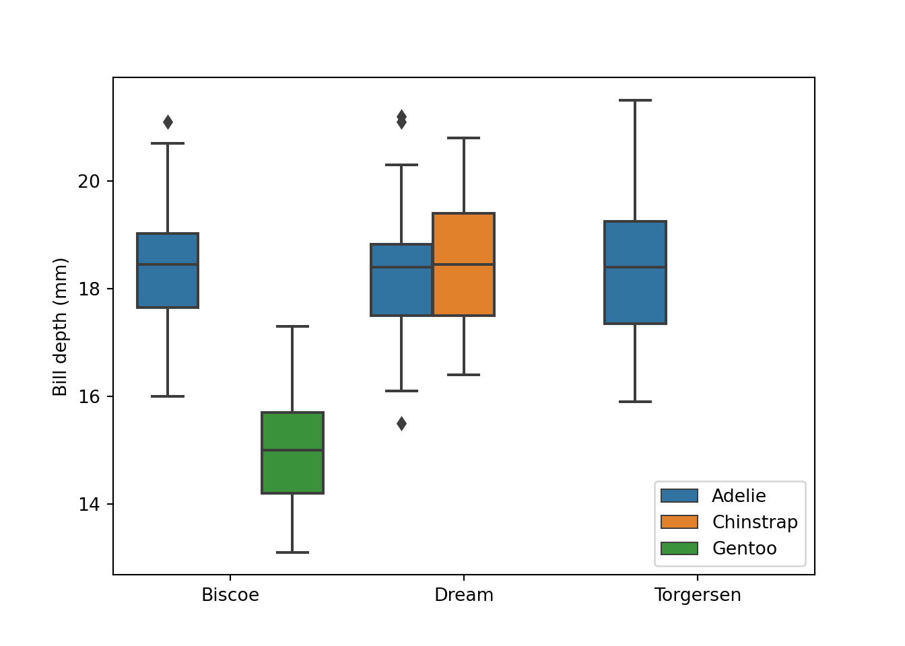

![]()
require(tidyverse)
require(reticulate)Multi-lingual: R and Python for Data Science
Analysis
Visualization
Introduction
If you work with data science, R and Python must be the two programming languages that you use the most. Both R and Python are quite robust languages and either one of them is actually sufficient to carry out the data analysis task. However, instead of considering them as tools that supplement each other, more often you will find people dealing with data claim one language to be better than the other. Truth be told, R and Python are excellent tools in ther own right but are often conceived as rivals. One major reason for such view lies on the experts. Because data analysts have divided the data science field into camps based on the choice of the programming language they are familiar with.
There major two camps—R camp and Python camp—and history is the testimony that camps can not live in harmony. Members of both camps believe that their choice of language . Honestly, I do not hold to their opinion, but rather wish I have skills for both languages. So, whether you have in R or Python camp, one thing you will notice is that the problem we have in data science is simply that divergence does not lie with the tools but with the people using those tools.
I believe there are few people in the Data Science community who use both R and Python in their analytical workflow. But majority are committed to only one programming language, but wish they had access to some functions from other language. Therefore, there is no reason that hold us to stick using this programming language or the other. Our ultimate goal should be to do better analytics and derive better insights and choice of which programming language to use should not hinder us from reaching our goals.
The questions that always resolute in my mind is whether can we utilize the statistical power of R along with the programming capabilities of Python?. Its undeniable truth that there are definitely some high and low points for both languages and if we can utilize the strength of both, we can end up dong a much better job. Thanks to Kevin Ushey and his colleges (2020) for developing a reticulate package. reticulate package provides a comprehensive set of tools that allows to work with R and Python in the same environment. The reticulate package provide the following facilities;
Calling Python from R in a variety of ways including
rmarkdown,sourcing,Python scripts, importing Python modules and using Python interactively within and R session.Translation between R and Python objects—for example
r_to_pyfunction allows to construct R to Pandas data frame andpy_to_r()function convert python object like data frame, matrix and etc to RFlexible binding to different versions of Python including virtual environments and conda environment.
Tibble to Pandas Dataframe
We are going to use a penguin dataset from palmerpenguins package (Horst, Hill, and Gorman 2020). We first need to import the dataset from the package where is stored into the R session. let us load the packages that we are glint to use in this post.
Once we have loaded the package, we then import the dataset.
peng = palmerpenguins::penguins
peng# A tibble: 344 x 8
species island bill_length_mm bill_depth_mm flipper_~1 body_~2 sex year
<fct> <fct> <dbl> <dbl> <int> <int> <fct> <int>
1 Adelie Torgersen 39.1 18.7 181 3750 male 2007
2 Adelie Torgersen 39.5 17.4 186 3800 fema~ 2007
3 Adelie Torgersen 40.3 18 195 3250 fema~ 2007
4 Adelie Torgersen NA NA NA NA <NA> 2007
5 Adelie Torgersen 36.7 19.3 193 3450 fema~ 2007
6 Adelie Torgersen 39.3 20.6 190 3650 male 2007
7 Adelie Torgersen 38.9 17.8 181 3625 fema~ 2007
8 Adelie Torgersen 39.2 19.6 195 4675 male 2007
9 Adelie Torgersen 34.1 18.1 193 3475 <NA> 2007
10 Adelie Torgersen 42 20.2 190 4250 <NA> 2007
# ... with 334 more rows, and abbreviated variable names 1: flipper_length_mm,
# 2: body_mass_gThe printed result suggest that this dataset is a tibble format—a modern data frame from the tidyverse ecosystem (Wickham and Wickham 2017). Let’s visualize the dataset with pair plot in GGally package (Schloerke et al. 2020)
peng %>%
filter(!is.na(sex)) %>%
GGally::ggpairs(columns = 3:6, aes(color = sex))However, our interest in this post is plotting this dataset using python. Therefore, we need to first import three key libraries that we will use throughtout this post. The chunk below highlight these packages and how to import them inside the python chunk.
import pandas as pd
import numpy as np
import matplotlib.pyplot as plt
import seaborn as snsOnce the tibble file is in the environment, we need to convert from tibble data frame into pandas dataframe. Make a copy of pandas dataframe from tible with the r. function
peng = r.peng
peng species island bill_length_mm ... body_mass_g sex year
0 Adelie Torgersen 39.1 ... 3750 male 2007
1 Adelie Torgersen 39.5 ... 3800 female 2007
2 Adelie Torgersen 40.3 ... 3250 female 2007
3 Adelie Torgersen NaN ... -2147483648 NaN 2007
4 Adelie Torgersen 36.7 ... 3450 female 2007
.. ... ... ... ... ... ... ...
339 Chinstrap Dream 55.8 ... 4000 male 2009
340 Chinstrap Dream 43.5 ... 3400 female 2009
341 Chinstrap Dream 49.6 ... 3775 male 2009
342 Chinstrap Dream 50.8 ... 4100 male 2009
343 Chinstrap Dream 50.2 ... 3775 female 2009
[344 rows x 8 columns]Plotting
Pairplot
fig = plt.figure()
sns.pairplot(data = peng, hue = "species")plt.show()Scatter plot
fig = plt.figure()
sns.scatterplot(
data = peng,
x = "bill_length_mm",
y = "bill_depth_mm",
hue = "island"
)
plt.xlabel("Length (mm)")
plt.ylabel("Depth (mm)")
plt.legend(loc = "lower right")
plt.show()Histogram
fig = plt.figure()
sns.histplot(data = peng, x = "bill_depth_mm", color = "steelblue")
plt.xlabel("Bill depth (mm)")
plt.ylabel("Frequency")
plt.show()fig = plt.figure()
sns.histplot(data = peng[peng.island == "Dream"], x = "bill_depth_mm", color = "steelblue", label = "Dream")
sns.histplot(data = peng[peng.island == "Biscoe"], x = "bill_depth_mm", color = "darkorchid", label = "Biscoe")
sns.histplot(data = peng[peng.island == "Torgersen"], x = "bill_depth_mm", color = "lightblue", label = "Torgersen")
plt.xlabel("Bill depth (mm)")
plt.ylabel("Frequency")
plt.legend(loc = "upper right")
plt.show()##3 Density
fig = plt.figure()
sns.kdeplot(data = peng, x = "bill_length_mm", shade = "steelblue")
plt.axvline(43.40, color="k", linestyle="--")
plt.ylabel("Density")
plt.xlabel("Bill length (mm)")
plt.show()The difference of bill length among the three species is interesting. Let’s look at the density plots of these species:
fig = plt.figure()
sns.kdeplot(data = peng[peng.species == "Adelie"], x = "bill_length_mm", label = "Adelie", shade = "steelblue")
sns.kdeplot(data = peng[peng.species == "Chinstrap"], x = "bill_length_mm", label = "Chinstrap", shade = "orange")
sns.kdeplot(data = peng[peng.species == "Gentoo"], x = "bill_length_mm", label = "Gentoo", shade = "green")
plt.legend(loc = "upper right")
plt.xlabel("Bill length (mm)")
plt.show()Boxplot
fig = plt.figure()
sns.boxplot(data = peng, x = "island", y = "bill_depth_mm", hue = "species")
plt.xlabel("")
plt.ylabel("Bill depth (mm)")
plt.legend(loc = "lower right")
# plt.gca().legend_.remove() # uncomment to remove legend
plt.show()
fig = plt.figure()
sns.violinplot(data = peng, x = "island", y = "bill_depth_mm", hue = "species")
plt.xlabel("")
plt.ylabel("Bill depth (mm)")
plt.legend(loc = "lower right")
# plt.gca().legend_.remove() # uncomment to remove legend
plt.show()
fig = plt.figure()
sns.violinplot(data = peng, x = "island", y = "bill_depth_mm", hue = "species")
sns.boxplot(data = peng, x = "island", y = "bill_depth_mm", hue = "species")
plt.xlabel("")
plt.ylabel("Bill depth (mm)")
plt.legend(loc = "lower right")
# plt.gca().legend_.remove() # uncomment to remove legend
plt.show()Pandas Dataframe to Tibble
The power of multilingual is clearly demonstrated with Rstudio, which allows you to swap dataset between R and python. In the previous section we created a peng dataset in python from R. In this session we are going to use this python dataset and convert it back to R. A py function from reticulate package is used as the chunk below illustrates:
peng.r = reticulate::py$peng
peng.r %>% as_tibble()# A tibble: 344 x 8
species island bill_length_mm bill_depth_mm flipper_~1 body_~2 sex year
<fct> <fct> <dbl> <dbl> <dbl> <dbl> <fct> <dbl>
1 Adelie Torgersen 39.1 18.7 1.81e2 3.75e3 male 2007
2 Adelie Torgersen 39.5 17.4 1.86e2 3.8 e3 fema~ 2007
3 Adelie Torgersen 40.3 18 1.95e2 3.25e3 fema~ 2007
4 Adelie Torgersen NA NA -2.15e9 -2.15e9 <NA> 2007
5 Adelie Torgersen 36.7 19.3 1.93e2 3.45e3 fema~ 2007
6 Adelie Torgersen 39.3 20.6 1.9 e2 3.65e3 male 2007
7 Adelie Torgersen 38.9 17.8 1.81e2 3.62e3 fema~ 2007
8 Adelie Torgersen 39.2 19.6 1.95e2 4.68e3 male 2007
9 Adelie Torgersen 34.1 18.1 1.93e2 3.48e3 <NA> 2007
10 Adelie Torgersen 42 20.2 1.9 e2 4.25e3 <NA> 2007
# ... with 334 more rows, and abbreviated variable names 1: flipper_length_mm,
# 2: body_mass_gCited references
Horst, Allison Marie, Alison Presmanes Hill, and Kristen B Gorman. 2020. Palmerpenguins: Palmer Archipelago (Antarctica) Penguin Data. https://doi.org/10.5281/zenodo.3960218.
Schloerke, Barret, Jason Crowley, Di Cook, Francois Briatte, Moritz Marbach, Edwin Thoen, Amos Elberg, and Joseph Larmarange. 2020. GGally: Extension to ’Ggplot2’. https://CRAN.R-project.org/package=GGally.
Ushey, Kevin, JJ Allaire, and Yuan Tang. 2020. Reticulate: Interface to ’Python’. https://CRAN.R-project.org/package=reticulate.
Wickham, Hadley, and Maintainer Hadley Wickham. 2017. Tidyverse: Easily Install and Load the ’Tidyverse’. https://CRAN.R-project.org/package=tidyverse.